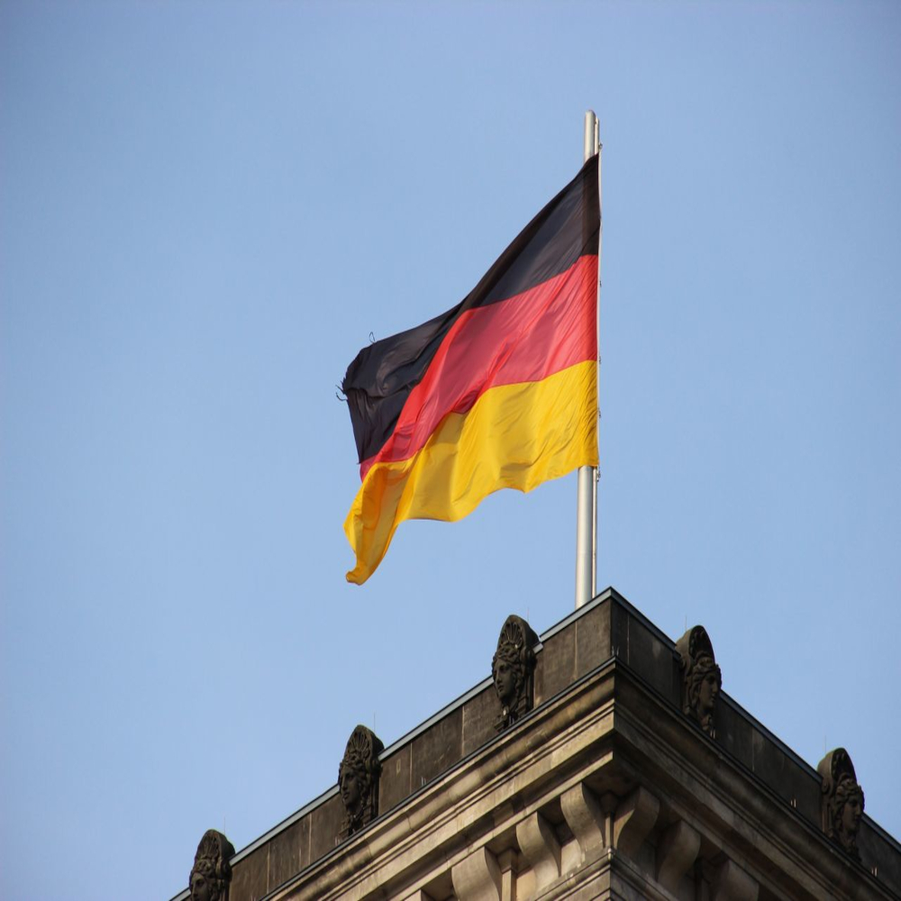

Veja os motivos do porquê eu gostar tanto desse país como um todo.
A Alemanha está localizada na Europa Central e possui uma história rica e marcante. Ao longo dos séculos, o país passou por importantes transformações políticas e culturais. Após a Segunda Guerra Mundial, a Alemanha foi dividida em duas partes: Alemanha Ocidental e Alemanha Oriental. Em 1990, os dois territórios foram reunificados, formando o país que conhecemos hoje. Atualmente, a Alemanha é uma das maiores economias do mundo e exerce grande influência na política e na cultura europeia.
A Alemanha oferece diversos pontos turísticos que atraem milhões de visitantes todos os anos. O Castelo de Neuschwanstein é um dos cartões-postais mais famosos do país e serviu de inspiração para castelos de contos de fadas. A capital, Berlim, abriga monumentos históricos como o Portão de Brandemburgo e o Memorial do Muro de Berlim. Além disso, cidades como Munique, Hamburgo e Colônia encantam os turistas com sua arquitetura, museus e festivais tradicionais.
A culinária alemã é conhecida por seus pratos saborosos e tradicionais. Entre as comidas mais famosas estão as diversas variedades de salsichas (Bratwurst), o joelho de porco (Schweinshaxe), o chucrute (Sauerkraut) e os pretzels. O país também é reconhecido pela produção de pães, doces e cervejas, sendo um dos maiores produtores de cerveja do mundo.
A Alemanha possui mais de 2.000 castelos espalhados por seu território. O país também é conhecido por suas rodovias chamadas Autobahn, onde alguns trechos não possuem limite de velocidade. Além disso, foi na Alemanha que nasceram grandes nomes da ciência e da música, como Albert Einstein, Johann Sebastian Bach e Ludwig van Beethoven. A tradicional Oktoberfest, realizada na cidade de Munique, é um dos maiores festivais culturais do mundo.
"A imaginação é mais importante que o conhecimento."- Albert Einstein
Retorne ao ponto inicial do site: Página Inicial